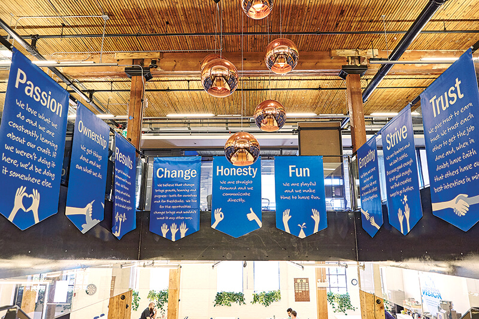

Welcome
Hi I'm Lindsay, I am a 4th year Computer Science student at the University of Guelph. On top of that I am working towards a minor in Mathematics. Along with my studies I am a Teaching Assistant for my school's first year programming class. I am currently on the search for my 4th co-op placement out of a total of 5.
Incase you were wondering what the Jomar and Freshbooks tabs meant, those are my past two work terms. In their own different ways, they have been a big part in creating the programmer I am today. If anyone from either of those places are reading this, I miss you guys and thanks for putting up with me everyday.
Life away from the computer includes yoga, reading, hiking, and adventure. I like to think I have an optimitic and enthusiatic personality paired with a terrible sense of humor.
The purpose of this website is to share my experience with others. Enjoy.

About Jomar
My 1st and 2nd work terms were at Jomar Softcorp Internationl in Cambridge, Ontario as a Junior Programmer. Jomar Softcorp Internation is a company that programs software solutions for many different platforms such as utilities, warehouse inventory, insurance, and police services. My placement was at the Head Office in Cambridge Ontario, however they have 2 additional offices in Vacouver, British Columbia and Charolette, North Carolina.
8 Months as a Junior Programmer
My work was based on modifications and additions made to the many number of applications created at Jomar. These modifications could take hours, days, or sometimes weeks. I would be involved in the entire process of that modicfication including the initial review, the implementation, and the testing.

The majority of my work was on the Utilities system, which was great in many ways. The first obviously getting to know how utility meters and how that whole system operates. Another good thing was getting comfortable with the code and database of 1 system so that I could go learn more complex things about that system instead of only touching the surface on many systems. The third good reason that I like to consider myself a Utility Meter specialist is that you work with the same people for 40 hours a weeks so you get to know them better, and they also hold you to a higher standard and give you more responsibility. As a co op student we know we are at the bottom, but it is our job to try our hardest to not finish with the feeling that we are still on the bottom.
Worked with: SQL, XML, XSL, Java, Javascript, HTML, CSS, Shell Scripts, Batch Files, Database Utilities and Reports
Goals
Did you have any goals for this work term?
Most of my goals for this work term were based upon social, professional, and personal development.
When I compare the goals I set for the first and second half of my work term they are very different. The main concern of my first work term was fitting in, learning the ways of the office, trying to keep up. The goals I set for the second half of my workterm were based around improving my workplace and enhancing my environment. I guess what I mean by that is helping the new co ops with simple things so that the people that trained me didn't have to repeat themselves so much.
Did you develop any goals relating to your job tasks?
Goals relating to my job taks included things like bring more independent, taking initiative, helping the new co op students that came at my 4 month mark, andlearning more about the company and not just the code.

What skills did you want to learn?
When it came to learning new skills I new that I was going to get a lot more familiar with code no matter what, but learning how each piece of the puzzle fit together was something I was really interested in being apart of. One of the main differences between the Computer Science and Software Engineering prograns.
What technologies did you want to work with and why?
Databases are everywhere, the more you know about them the better because I know they will follow me everywhere I go. Before working at Jomar I only knew the bare minimum when it came to databases. After completing an 8 month work term I can confidently say I am very comfortable working with databases and what they have to offer.

About Freshbooks
Freshbooks is a cloud based accounting software company that has been around for over 10 years. They recently released a completely new platform of their entire application, this included a smoother backend, efficiency and sustainability adjustments, and of course a major face lift.
The culture at Freshbooks is something I had never experienced before. The staircase heading downstairs held up all the "values" that Freshbooks held every employee to. The first letter of all of these values spelt out PORCHFEST (Passion, Ownership, Results, Change, Honesty, Fun, Empathy, Strive, Trust), this the name for the weekend retreat that takes place up in Muskoka every summer. I had the opportunity to go this year, I had the time of my life.
Summary of my 4 Months
The first 2 weeks or so were full of learning, setup, and getting comfortable with the code-base. Even though I was still very very new to Freshbooks I felt part of the team. They gave me small bugs to work on in between my training sessions with the other co-ops and I pushed code out to production as early as the first week. Around this time I also had meeting with my 'Freshbuddy' to talk about things I was interested in and determine how I would make the most out of my 4 months at Freshbooks.
The first major task I took on was refactoring the codebase we use to send all of our emails out. This service was called Newman and I became very comfortable with it by the end of my 4 months. Fun Fact: I finished my work term as the 7th highest contributor on Github for this particular repository. This could be due to the fact that my next major contribution was replacing one of our 3rd party emailing vendors. This involved research, comparison, talking with the vendor, implementation, and testing of the entire process. The final main contribution I had over my 4 month work term was joining the team in creating extensive tests of our Journal Entry code. This meant creating tests for every transaction we could possible conjure up to ensure that the journal entries are being created the right way.
Leaving Freshbooks at the end of the summer was so bittersweet. Now that I am starting back up at school I am motivated to power through these next 2 years to the best of my ability so that I can continue to grow and develop as a developer. Yes, I am aware that was cheesy.
Highlights
Influence on my Future
This summer has been more than just a great learning experience when it comes to the work I could potentially be doing in the future. The culture of Freshbooks could not excite me more, it is probably the thing I am going to miss the most. I am a women pursuing a career in the technology industry, it does not take much for me to feel out of place and have minor 'imposter syndrome'. I have always felt like I stuck out like a sore thumb in my program and workplace, this was not the case at Freshbooks. Not only was I welcome as a co-op student, my gender was never a topic of conversation.
Working at a place like Freshbooks excites me to wrap up this degree and find one of the many places that have a similar culture and that I know I love to work at. This summer has been just as much motivating as it has been rewarding. Ending my current work term at Freshbooks is so bittersweet and it only makes me want to work even harder. It is hard to top a place like Freshbooks in term of quality of work term, if I want to attempt to do that I know that I need to be at the top of my game at all times and that is thanks to Freshbooks.
Goals
Did you have any goals for this work term?
Did you develop any goals relating to your job tasks
As far as technical goals are concerned, I knew once I got to Freshbooks those would be created based on what I was working on. Something that I did not see coming was one of my goals of improving my public speaking. If you have ever met me you would know that I am not that shy of a person. However when I am in a formal setting in front of a crowd it is a completely different story. Demos are held every other Friday at Freshbooks and it didn't take my team long to realize I really despise public speaking. Naturally they made me speak at every demo of my 4 month work term. I got so comfortable with public speaking that I am no a Teaching Assistant for CIS*1500 - Intro to Programming. Teaching labs every week is now a piece of cake and that is something I never thought I would say.
What skills did you want to learn?
The entire co-op program is all about trying new things and developing your skills so that you can be in a good position when you graduate. Other than the culture, the largest difference between both of my work terms so far has been the age of the code and practices used every day. Freshbooks is modern, it’s new, it’s adaptive, and I hate to be cheesy but... it’s fresh. I knew this before actually starting my work term here and I was very excited to see how a growing tech company when about their entire software design process. In class we hear about all the different methodologies and flow charts of software development that seem redundant and unrealistic. When you are apart of the software development process of a collaborative and innovative company with over developers it is clear why there desperately needs to be a process in place and standards to meet.
What technologies did you want to work with and why?
Resume
Contact Me
Email: lellio04@uoguelph.ca
LinkedIn: Here's a link to my profile
Mobile: 519 - 784 - 7031